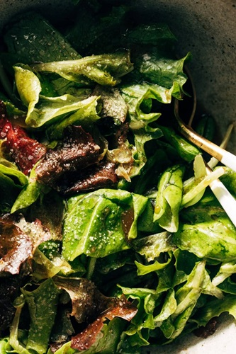

Green salad recipe

Ingredients
- 1/4 cup maple syrup
- 1/4 cup balsamic vineger
- 1/2 cup olive oil
- 1/2 teaspoon garlic powder
- 1 teaspoon salt
- black pepper to taste
Instructions
- shake dressing ingredients up in a jar.Taste and adjust to get it just right for how you like it
- Toss a gnerous amount of spring greens with just a few light drizzles of dressing- you want to get the leaves entirely coated in dressing(but not so much that they get soggy) a gentle toss prevents breaking the leaves./li>